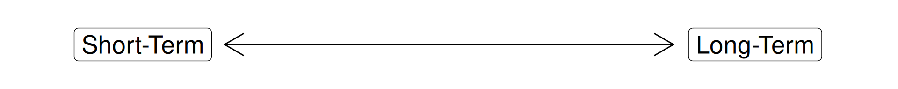
Today’s Agenda
Finding and Analyzing the Relevant Stakeholders
- Uncertainty complicates problem-solving
Justin Leinaweaver (Spring 2025)
Engaging Productively as Problem-Solvers
Describe the problem facing our community
Investigate the relevant stakeholders
Frame the problem for the stakeholders
Design a policy to address the problem
Take action to push the plan forward!
Temporal Discounting

Discounting for Inflation

Receiving a Benefit
Offer 1: An immediate payment of $10
What is the smallest amount of interest I would have to pay you to get you to wait one year for the money?
- 5% ($0.50), 10% ($1), 20% ($2), 50% ($5), 100% ($10), more?
Receiving a Benefit
Offer 2: An immediate payment of $1,000
What is the smallest amount of interest I would have to pay you to get you to wait one year for the money?
- 5% ($50), 10% ($100), 20% ($200), 50% ($500), 100% ($1k), more?
Receiving a Benefit
Offer 3: An immediate payment of $1 million
What is the smallest amount of interest I would have to pay you to get you to wait one year for the money?
- 5% ($50k), 10% ($100k), 20% ($200k), 50% ($500k), 100% ($1m), more?
Paying a Cost
Debt 1: $1,000 owed today
What is the maximum amount of interest YOU would be willing to pay to delay this bill by one year?
- 5% ($50), 10% ($100), 20% ($200), 50% ($500), 100% ($1k), more?
Paying a Cost
Debt 2: $1,000 owed ten years from today
What is the maximum amount of interest YOU would be willing to pay to delay this bill by one ADDITIONAL year?
- 5% ($50), 10% ($100), 20% ($200), 50% ($500), 100% ($1k), more?
Paying a Cost
Debt 3: $1,000 owed fifty years from today
What is the maximum amount of interest YOU would be willing to pay to delay this bill by one ADDITIONAL year?
- 5% ($50), 10% ($100), 20% ($200), 50% ($500), 100% ($1k), more?
Results: Receiving a Benefit
Offer 1: Wait one year for $10
- Average: 4%
Offer 2: Wait one year for $1,000
- Average: 7%
Offer 3: Wait one year for $1 million
- Average: 8%
Results: Receiving a Benefit
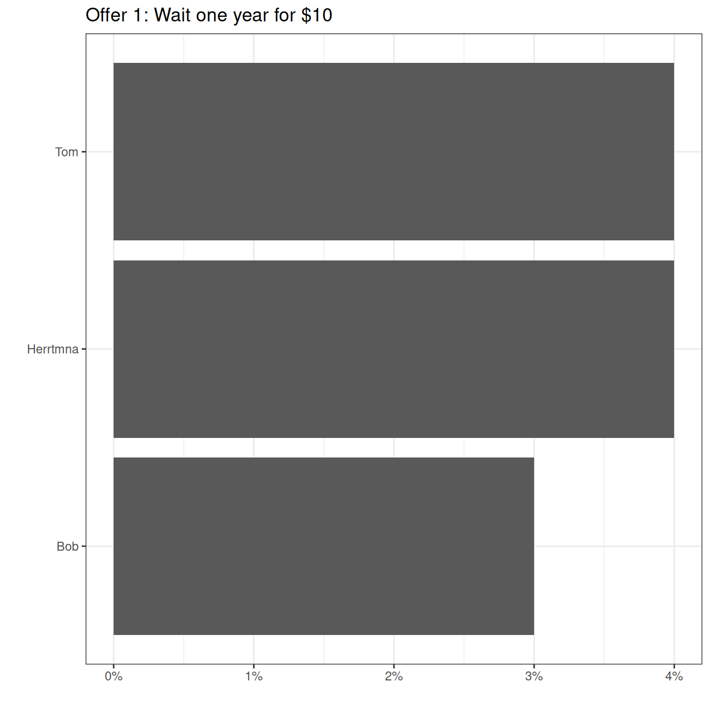
Results: Receiving a Benefit
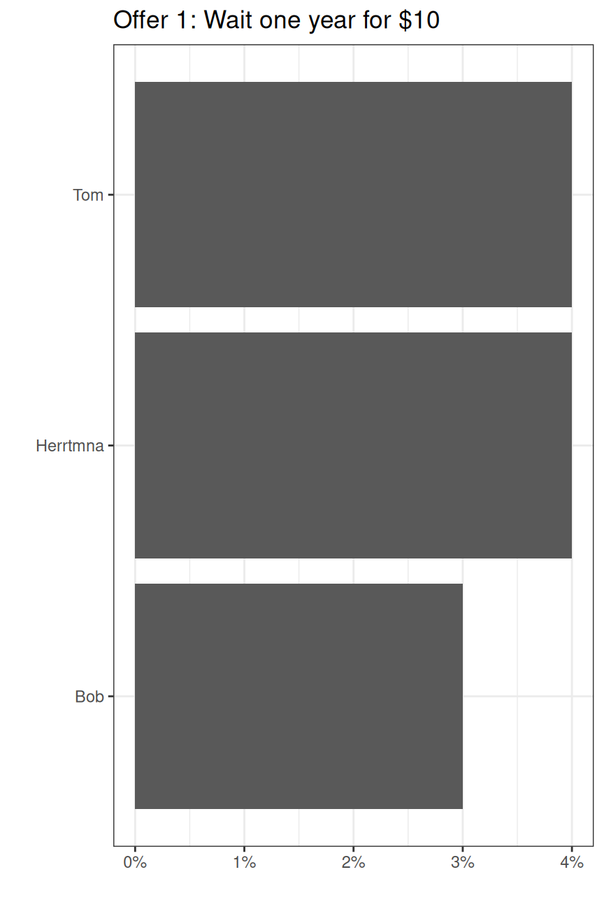
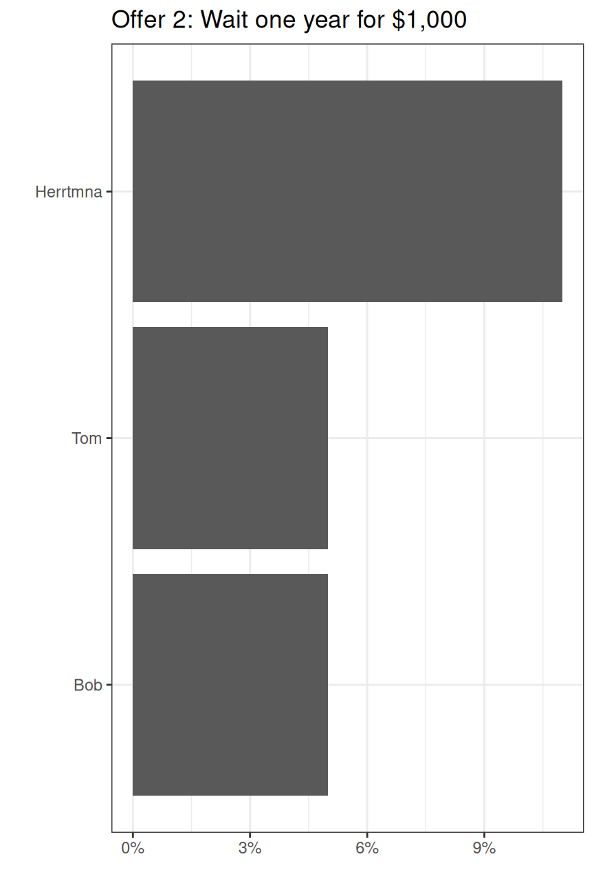
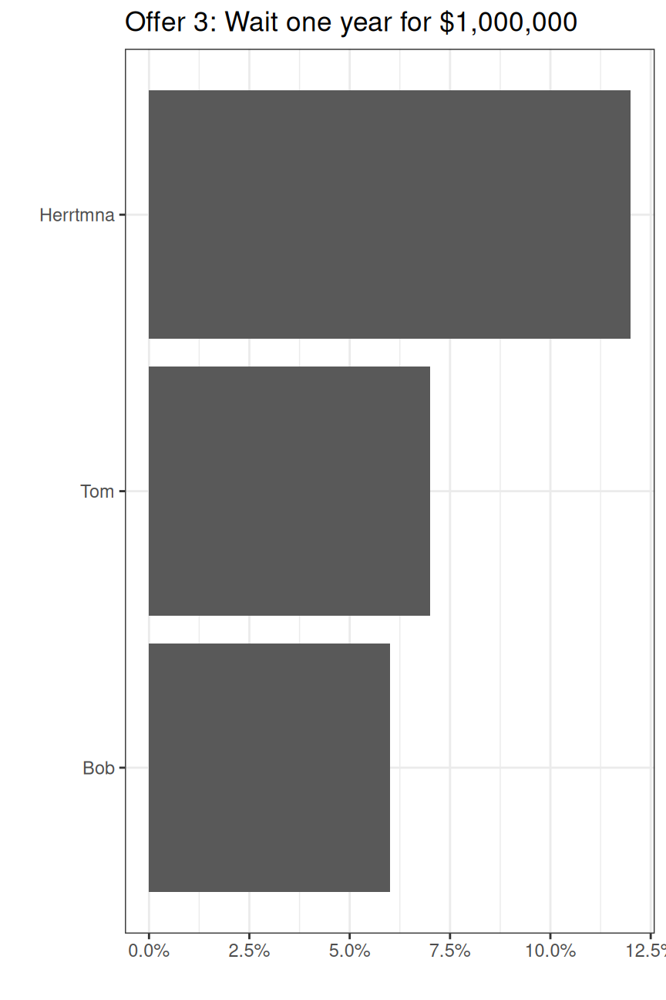
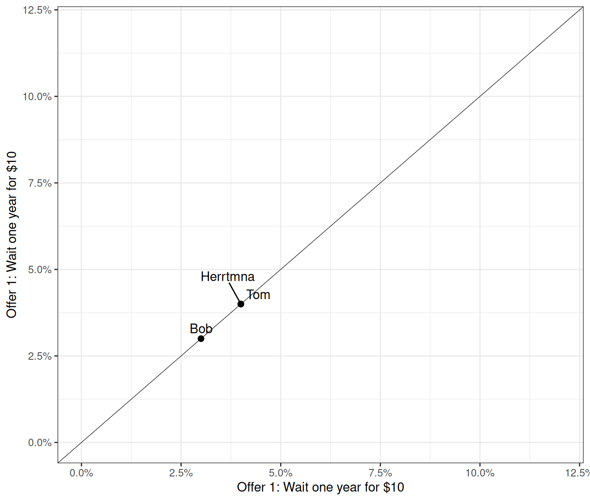
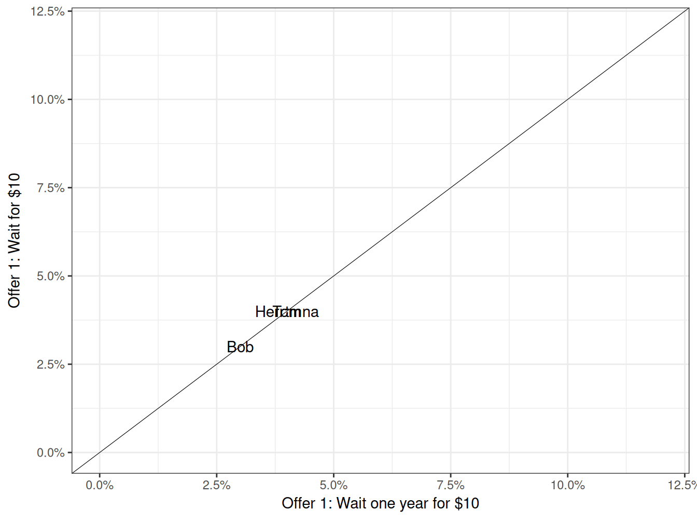
Results: Delaying a Cost
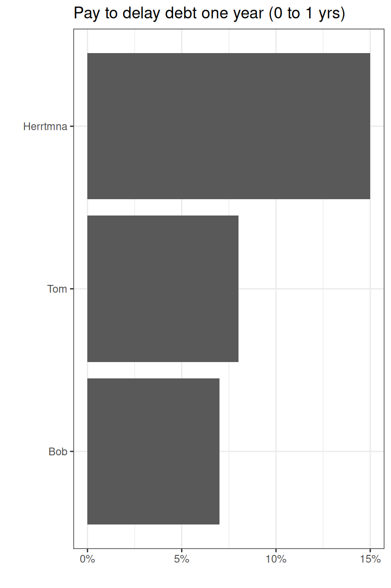
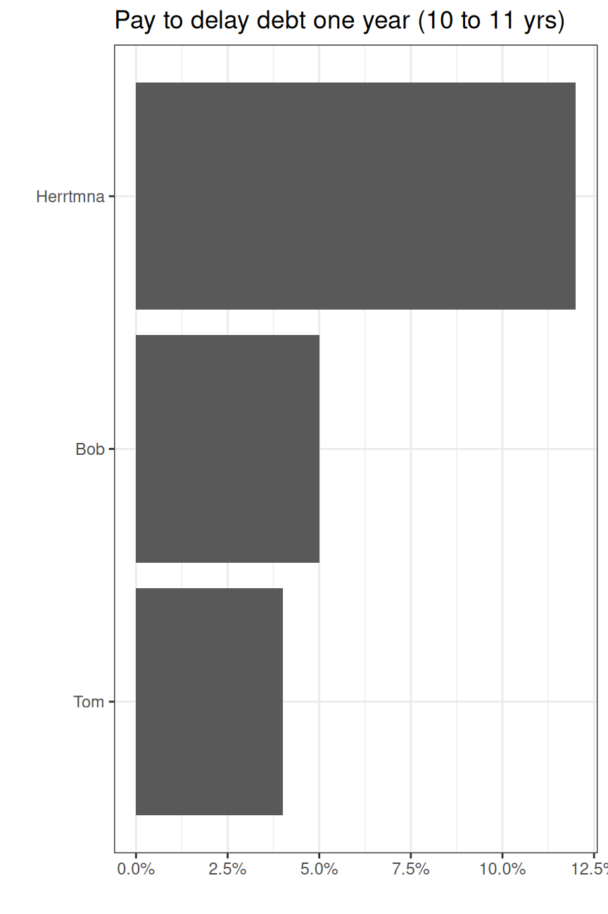
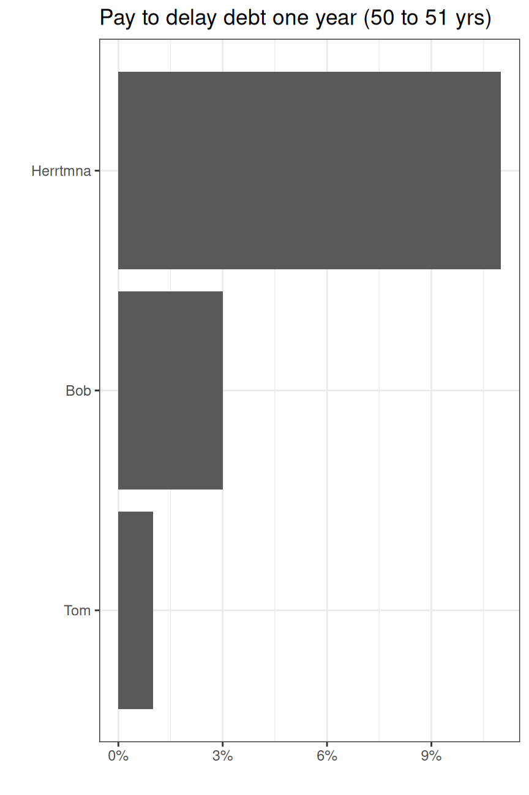
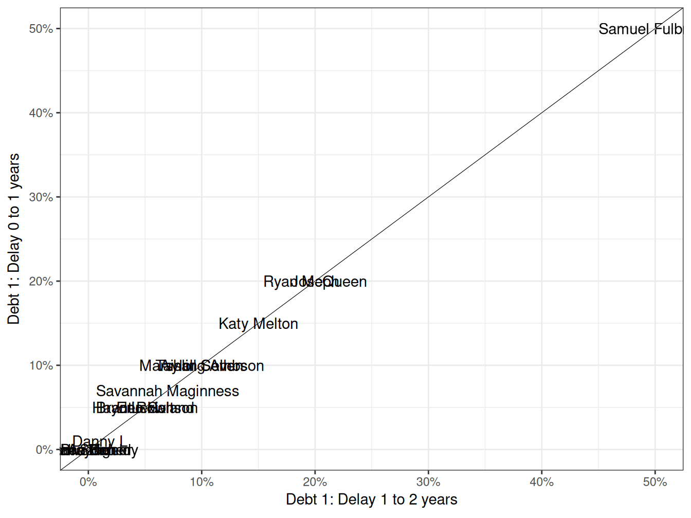
Results: Benefits vs Costs
Offer 1: Wait one year for $10
- Average: 4%
Offer 2: Wait one year for $1,000
- Average: 7%
Offer 3: Wait one year for $1 million
- Average: 8%
Debt 1: Delay 0 to 1 years
- Average: 10%
Debt 2: Delay 10 to 11 years
- Average: 7%
Debt 3: Delay 50 to 51 years
- Average: 5%
Pindyck (2007)
Uncertainties in Environmental Policymaking
Uncertainty over ecological processes, economic impacts of the harms and the costs of limiting the damages
Nonlinear costs and benefits (plus “tipping points”)
Irreversibilities
Very long time horizons
Kotz, Levermann & Wenz (2024)
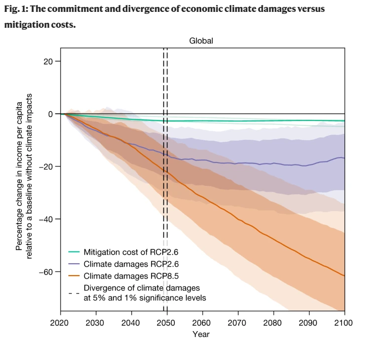
Pindyck (2007)
Uncertainties in Environmental Policymaking
Uncertainty over ecological processes, economic impacts of the harms and the costs of limiting the damages
Nonlinear costs and benefits (plus “tipping points”)
Irreversibilities
Very long time horizons
Uncertainty and temporal discounting complicates problem-solving
Have you seen evidence of uncertainty, temporal discounting and differing time horizons in the stakeholders in your map of the food waste problem?
For Next Class
Collective action problems and free-riding
- Readings and a Canvas assignment